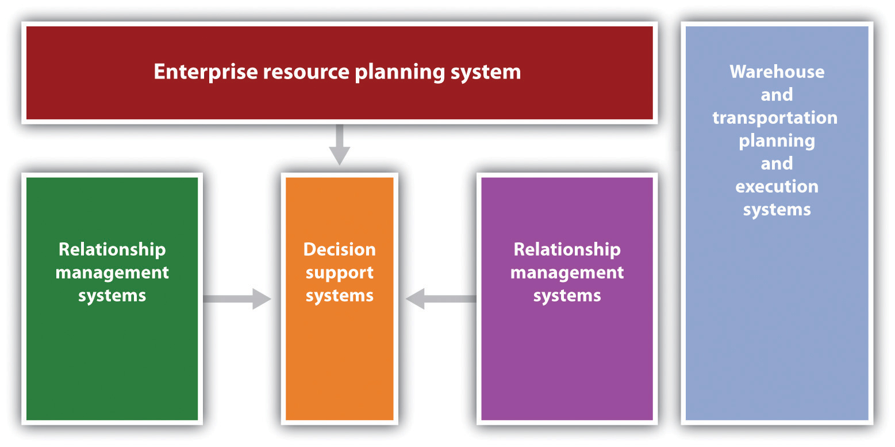

Throughout this text, we have emphasized the importance for small businesses to constantly focus on the notion of improving value for their customers. Successfully implementing a supply chain management system offers tremendous possibilities for not only improving value to customers but also significantly enhancing the capabilities and profitability of the small business itself. Supply chain management improves customer value in the following ways:
It must be recognized that committing to a supply chain management system from scratch will entail a major investment. New approaches to software can reduce both the cost and the risk of such a commitment. However, businesses will want to recoup most of the investment as quickly as possible—perhaps six months or less. Given the potential for cost savings, the impact on increasing cash flow should be obvious.
What is not obvious is the potential for significant improvements in cash flow from minor improvements generated by supply chain management systems. To illustrate this, let us look at an example adapted from Coyle et al. (2009).John J. Coyle, C. John Langley, Brian Gibson, Robert A. Novak, and Edward J. Bardi, Supply Chain Management: A Logistics Perspective, 8th ed. (Mason, OH: South-Western, 2008), 301. Assume that a firm is in the following situation: It ships orders to customers; if the orders are incomplete or inaccurate, the firm assumes the full cost of the return and follow-up shipping. When an incorrect shipment is made, to ameliorate their upset customers, the firm takes $100 off the bill. However, when some customers find that the order is incomplete or inaccurate, they are so upset that they cancel the order. Here are the data:
| Number of orders per year | 50,000 |
| Number of items per order | 25 |
| Profit per unit ($) | 30 |
| Price reduction for incorrect order ($) | 100 |
| Back order cost per order ($) | 200 |
| Percentage of totally correct orders | 90 |
| Percentage of incorrect orders cancelled | 25 |
It can be readily seen that the profit per order is $750 (25 × $30). We now examine the lost cash flow from the situation. The lost cash flow has several components. The first component is the back order cost, which is composed of the number of orders that will have to be back filled. The second component is associated with the losses from the incorrect orders that were canceled. The last component is the price reduction for the incorrect order.
lost cash flow = backorder costs + cancelled sales costs + price reduction costsThese can be computed as follows:
lost cash flow = [number of orders × (1 − percentage of totally correct orders) × backordered cost per order] [number of orders × (1 − percentage of totally correct orders) × percentage of incorrect orders cancelled × profit per order] + [number of orders × (1 − percentage of totally correct orders) × price reduction for incorrect order]Now let us substitute the correct values into this equation.
lost cash flow = [50,000 × (1 − .90) × $200] + [50,000 × (1 − .90) × (.25) × $750] + [50,000 × (1 − .90) × $100] lost cash flow = $1,000,000 + $937,500 + $500,000 = $2,437,500We now assume that an “improved” supply chain management system has been installed. The percentage of correctly filled orders increases from 90 percent to 96 percent. If we substitute 96 percent into these equations, we find that the new lost cash flow would decrease to $975,000. This means that a 6 percent increase in order accuracy leads to a 60 percent decrease in the loss of cash flow.
It should be obvious that contemporary supply chain management cannot be conducted through paper and pencil procedures. The backbone of today’s supply chain management is software. Initially, it would be impossible to think of developing such systems without electronic data interchangeThe ability to electronically transfer large “packets” of data across various locations and programs.. Today, the Internet serves as the basis for sharing communication between suppliers and customers. However, there is more to the technology behind supply chain management system than merely the exchange of data.
Supply chain management requires several types of software packages and the need to successfully integrate them. One can identify several major software components of a supply chain management system (see Figure 11.4 "Schematic for a Supply Chain Management Information System"). One section would be supplier relationship managementPrograms that involve planning and controlling the actions with upstream suppliers, including supplier analysis, order execution, payment, and performance monitoring. programs. These programs involve planning and controlling the actions with upstream suppliers. Such programs would cover many aspects of procurement—supplier analysis, order execution, payment, and performance monitoring.Joel D. Wisner, G. Keong Leong, and Keah-Choon Tan, Principles of Supply Chain Management: A Balanced Approach (Mason, OH: South-Western, 2004), 76. There would also be customer relationship management (CRM) software that would handle all interactions with customers. Enterprise resource planning (ERP) would handle the necessary integration of all data. ERP coordinates data flows from finance, accounting, and operations to provide management with a seamless overview of the performance of a business. It may also have a decision support systemA program that allows for data manipulation or the use of analytical modeling tools to provide a better decision-making environment, which may involve the use of mathematical programming models to optimize decisions., which allows for data manipulation or the use of analytical modeling tools to provide a better decision-making environment. It may involve using mathematical programming models to optimize decisions. Another set of modules dedicated to logistics would focus on the optimal use of warehousing and shipping. These functions are sometimes handled externally by either a third- or fourth-party logistics provider.
Figure 11.4 Schematic for a Supply Chain Management Information System
Not too long ago, the acquisition and the operation of these software packages would have been prohibitive for most small businesses from both a cost standpoint and a technical standpoint. Fortunately, software providers now recognize that small and midsize businesses represent a tremendous market for supply chain management software. It was estimated in 2008 that the demand for business enterprise software applications for small and midsized businesses would grow at a nearly 11 percent annualized growth rate until 2012.“Small and Medium-Sized Business Enterprise Applications Market to Grow to $80.3 Billion by 2012,” Business Wire, June 11, 2008, accessed February 2, 2012, www.reuters.com/article/2008/06/11/idUS117514+11-Jun-2008+BW20080611. Microsoft, Oracle, and SAP have developed systems that enable small to midsize companies to handle all the complexities of global supply chain management.Carol Lawrence, “Enterprise Resource Planning Software Become More Accessible to Small and Midsize Companies,” McClatchy Tribune Business News, August 8, 2010. Large software vendors such as Oracle estimated that the midmarket clientele was approximately 4,500 out of their total client base of 7,000 customers. Several factors can be attributed to this rapid growth in small to midsize businesses. The first was that many software providers were willing to offer in-house installation at a predictable cost. Second and perhaps the most important factor is the increasing move to cloud-based softwareSoftware located off-site, generally maintained by another party, and that can be accessed anywhere there is an Internet connection., where software resides on an external server to which the businesses are connected to via the Internet. It provides several substantial benefits to small businesses: lowers software and hardware costs, installation is significantly easier, maintenance and training costs are lower, and free upgrades may sometimes be available. The use of Internet-based systems also makes it easier to maintain lines of communications with one’s suppliers and customers. Robert LaGarde, president of LaGarde E-business Solution, has stated that “using Internet technology to provide customers with online demand access to supply chain systems is critical to nurturing and growing relationships with customers.”David Hayes, “When Size Doesn’t Matter (in business),” McClatchy Tribune Business News, March 4, 2010. What initially appeared to be a remarkably complex system of programs has now been made available to even very small businesses.
Impact of RFID Technology on Supply Chain Management
(click to see video)The impact of RFID technology on supply chains.
Supply Chains and Information Technology
(click to see video)Modern-day supply chains are tasked with responding at lightning speed.
Future Supply Chain 2016
(click to see video)The main supply chain challenges for consumer products and retail for the next decade.
Japan: The Business Aftershocks
Japan is a small country with a supersized role in the global supply chain (a short ad precedes the video clip).
List of Supply Chain Management Software
A comprehensive list of SCM software with links.
www.capterra.com/supply-chain-management-software
About.com SCM Software
Supply chain management software with links to other sites.
The Benefits of Supply Chain Management Software
Identifies benefits and includes option to download a report on the top fifteen ERP providers.
www.business-software.com/erp/supply-chain/benefits-of-supply-chain-erp.php
This chapter has emphasized that successful supply chain management requires successful integration across the supply chain. It has been argued that businesses should actively seek to have a single source supplier for particular parts and components. Having a single source supplier may result in a closer relationship that should yield significant economic benefit. Many businesses, both large and small, have moved toward, if not a single supplier, then a significantly reduced number of suppliers for particular parts. This, however, may have some serious negative consequences.
Apple introduced its new iPad 2 tablet on March 2, 2011. Little more than a week later, on March 11, Japan was struck by a major earthquake and damage from the resulting tsunami. Although the two events may seem to be unrelated, there were several connections. It was estimated that Japanese firms manufactured at least five major components in the iPad 2. Although some of these firms were not damaged by either the earthquake or the tsunami, they found that maintaining production schedules was a challenge due to curtailment and available electricity, the movement of supplies, and employees being unable to arrive at work. “These factors are having a major impact on ‘delicate processes, such as semiconductor lithography,’ said the report, especially as the country continues to experience aftershocks.”Michelle Maisto, “Apple iPad 2 Production Hindered by Japan Earthquake: IHS iSuppli,” eWeek.com, March 19, 2011, accessed February 2, 2012, www.eweek.com/c/a/Mobile-and-Wireless/Apple-iPad-2-Production-Hindered-by-Japan-Earthquake -IHS-iSuppli-385386. Apple was not the only firm affected by the Japanese disaster. The port of Sendai was heavily damaged, and many goods could not be shipped out. As one commentator put it, “It is a nuclear winter for the economy.”Peter Müller and Alexander Neubacher, “Disaster in Japan Sends Ripples through the Global Economy,” Spiegel Online International, March 22, 2011, accessed February 2, 2012, www.spiegel.de/international/business/0,1518,752325,00.html.
Further exacerbating the situation for Apple was an explosion at Foxconn Technology Group’s plant in Chengdu, China. The explosion killed three workers and injured many more. In addition, the initial estimate was that Apple might lose production of more than half a million iPad 2 units while the plant was closed for repairs.“Blast Could Cut iPad 2 Production by 500,000: iSuppli,” Taipei Times, May 25, 2011, accessed February 12, 2012, www.taipeitimes.com/News/biz/archives/2011/05/25/2003504064.
Disruptions in the supply chain need not be caused by natural disasters. They can occur because of human failings and can have significant consequences. Toys “R” Us was severely damaged in 1999 when its online customer order system proved to be inadequate for demand at Christmastime. In the same time frame, The Hershey Company, which expended approximately $100 million on developing software for its supply chain, found that attempting to develop an order system, a CRM system, and a supply chain planning system proved to be too much of a technical challenge. Because of failures in the system, Hershey missed at least $150 million in orders. Hershey was guilty of trying to implement these systems simultaneously. They had gone a “bridge too far.”“The 11 Greatest Supply Chain Disasters,” SupplyChainDigest, January 2006, accessed February 2, 2012, www.scdigest.com/assets/reps/SCDigest_Top-11 -SupplyChainDisasters.pdf.
There is actually a field called supply chain sensitivity analysis that attempts to identify the extent of disruptions in the supply chain caused by external factors. It relies on computer simulation analysis.Jack Kleijen, “Supply Chain Simulation Tools and Techniques: A Survey,” International Journal of Simulation and Process Modeling 1, no. 1/2 (2005): 82. Obviously, such an approach is beyond the capability of most small businesses.